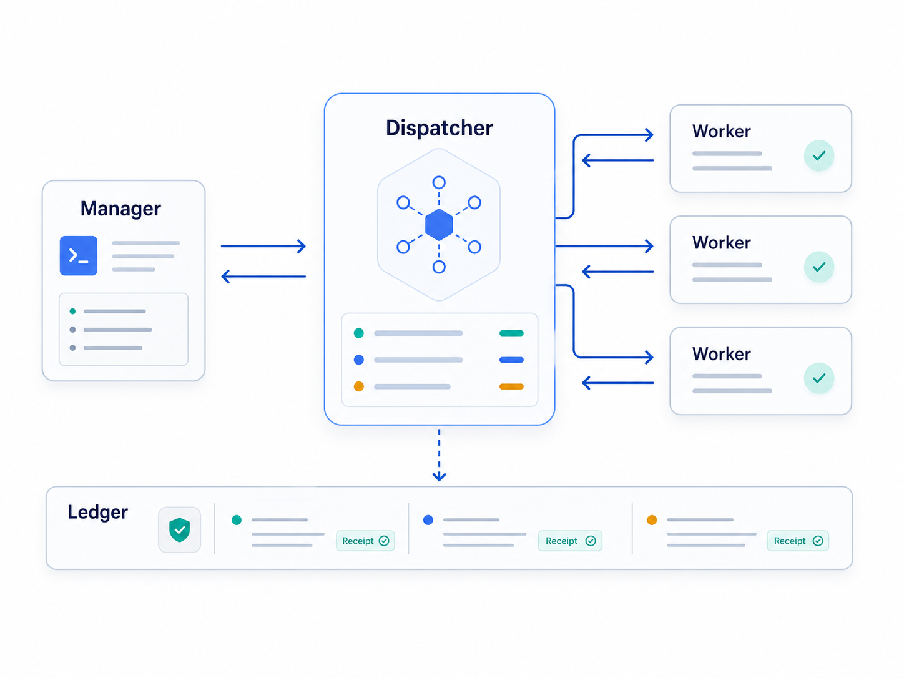

Goal Conveyor
For work bigger than one safe worker turn.
Runs broad work as one active child board at a time.
strict
PR/CI gates
handoff before compact
Codex worker fleet control
Agent Conveyor replaces ad hoc chat-based coordination with a dispatcher-backed ledger, so manager-led worker sets can fan out, report back, and resume without losing state.

Use this setup path inside the project where you want a manager to coordinate a grounded worker set.
npm install -g agent-conveyor
conveyor install-plugin
conveyor doctor --json
conveyor create-disposable-binding "$TASK" --worker-codex-app-thread-id "$WORKER_THREAD_ID" --manager-codex-app-thread-id "$MANAGER_THREAD_ID" --json
conveyor app-smoke preflight "$TASK" --mode required --scope pair --json
Creates visible manager and worker threads.
Routes assignments through the project ledger.
Returns receipts, blockers, and handoff state.
Continues, rotates, or closes from durable state.
Add Conveyor and its Codex operator plugin.
Create titled manager and worker app threads.
Route work through the project ledger.
Track receipts, blockers, and manager decisions.
Continue from durable state instead of chat memory.
Choose a manager mode for the work. Each one keeps coordination in the dispatcher and project ledger.
For work bigger than one safe worker turn.
Runs broad work as one active child board at a time.
For confidence gaps.
Raises test confidence before another worker pass.
For screenshot-led fixes.
Uses screenshots, browser evidence, and visual diffs.
For low-risk next steps.
Observes, clarifies criteria, and suggests the next step.
For review-to-merge work.
Drives review, CI, merge, and handoff receipts.
Every run should show why work started, continued, stopped, or shipped.
doctor --jsonInstallPackage, plugin, skills, paths, and project health.
app-smoke statusConnectionNonce sends, heartbeats, and accepted role receipts.
app-autopilot statusAutonomyAutomation receipts or an explicit manual-poll mode.
replay / auditCloseoutCompletions, decisions, screenshots, and blockers.
Next proof: one recording where a manager and worker set pass smoke, then fan out a UX polish pass with screenshot evidence. Use the capture plan.
conveyor-create-worker-set
Record the setup
Show visible threads, operator_ready=true, and smoke passed for every shard.
ux-polish-loop
Record the payoff
Show polish slices, screenshot receipts, and replay proof.
Chat is not the source of truth. Conveyor records the dispatcher state, ledger events, and proof.
Mode, permissions, tools, and ack policy.
Smoke ids, nonces, roles, blockers, and readiness.
Messages, delivery, consumption, and failures.
Criteria, screenshots, visual diffs, and scope calls.
Heartbeat specs, applied receipts, and readiness.
Heartbeats, stale work, wake actions, and clues.
Use the database as the bug report.
Start with conveyor replay, attach the receipts, then
tune the weak handoff.
Verify the package first. Publish only through the approved Trusted Publishing run.
gh workflow run publish.yml -f version=0.1.26 -f publish=false
gh workflow run publish.yml -f version=0.1.26 -f publish=true
npm view agent-conveyor version
publish=true, matching version, approved environment.Dispatcher-led workers. Ledger-backed state. Replayable decisions.